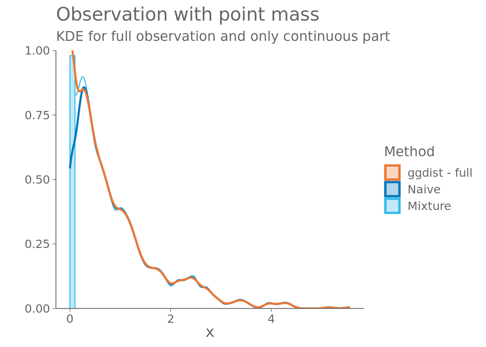

Below, we examine two common pitfalls of density plots made using kernel density estimates (KDEs). Overall, KDEs have satisfactory performance in summarising observations of continuous random variables, but, as highlighted below, when the variable is bounded, or contains point masses, the density estimate can misrepresent the data without any issues being immediately apparent from the density plot.
Simple continuous example
Sample \(x_1,\dots,x_N\), from Laplace distribution with mean, \(\mu = 0\), and scale, \(b=1\), that is, the density function of \(x\) is \(f(x) = \frac{1}{2}\exp\left(-|x|\right)\).
Simulate an example, where measurements under a certain threshold are reported as zeros. Here \(x\sim\exp(x)\) with all values sampled below \(0.1\) reported as zero.
Code
x3 <-rexp(1000, 1)x3[x3 < .1] <-0
If the measurement threshold is known, the data can be visualized as a mixture of a discrete point mass and a continuous distribution. The “naive” KDE seems to under estimate the density near \(0.1\), and can’t show the spike at zero.
Below, the density of the continuous mixture component is scaled by \(P(x \neq 0)\) to make the area of the bar and the KDE together add to one.
Code
p3 <-ggplot() +geom_rect(aes(xmin =0, xmax = .1, ymin =0, ymax =10*sum(x3 ==0) /length(x3), colour ="Mixture", fill ="Mixture"),alpha = .3) +stat_density(aes(x = x3[x3 >0], y = (1-sum(x3 ==0) /length(x3)) *after_stat(density), colour ="Mixture", fill ="Naive"), alpha =0, bounds =c(.1, Inf), outline.type ="upper") +stat_density(aes(x = x3, colour ="Naive", fill ="Naive"), alpha =0, linewidth =1, outline.type ="upper") +labs(title ="Observation with point mass",subtitle ="KDE for full observation and only continuous part",x =TeX("x"), y ="", colour ="", fill ="") +scale_colour_vibrant() +scale_fill_vibrant() +scale_y_continuous(expand =c(0,NA))p3

The calibration of the KDE for the continuous part should be inspected separately, as the scaled density above would show miscalibration due to missing part of the observation distribution.
---title: "Pitfalls of density plots"author: "Teemu Säilynoja"date: "2023-02-22"date-modified: "`r format(Sys.Date(), '%Y-%m-%d')`"format: html: page-layout: full toc: true code-fold: true code-tools: true code-line-numbers: true---```{r}#| label: imports#| message: falselibrary(ggplot2)library(ggdist)library(bayesplot)library(khroma)library(latex2exp)library(sfsmisc)source("../../../code/helpers.R")source("../../../code/kde_tests.R")set.seed(37645624)good_theme <- bayesplot::theme_default(base_family ="Sans", base_size =14) +theme(axis.text =element_text(colour ="#666666", size =12),axis.ticks =element_line(colour ="#666666"),title =element_text(colour ="#666666", size =16),plot.subtitle =element_text(colour ="#666666", size =14),legend.text =element_text(colour ="#666666", size =12),legend.title =element_text(colour ="#666666", size =14),axis.line =element_line(colour ="#666666"))theme_set(good_theme)``````{r}ecdf_difference_limits <-ecdf_confidence_intervals(gamma =adjust_gamma_optimize(1000,1000, .95),N =1000, K =1000)x0 <-0:1000/1000p0 =ggplot(mapping =aes(x = x0)) +geom_step(aes(y = (ecdf_difference_limits$lower -0:1000) /1000)) +geom_step(aes(y = (ecdf_difference_limits$upper -0:1000) /1000)) +labs(title ="ECDF Difference",subtitle ="95% outer simultaneous confidense intervals",x ="PIT",y ="ECDF - Difference")```## IntroBelow, we examine two common pitfalls of density plots made using kernel density estimates (KDEs).Overall, KDEs have satisfactory performance in summarising observations of continuous random variables,but, as highlighted below, when the variable is bounded, or contains point masses, the density estimatecan misrepresent the data without any issues being immediately apparent from the density plot.## Simple continuous exampleSample $x_1,\dots,x_N$, from Laplace distribution with mean, $\mu = 0$, and scale, $b=1$, that is,the density function of $x$ is $f(x) = \frac{1}{2}\exp\left(-|x|\right)$.```{r}#| label: sample 1x1 <-sample(c(-1,1), 1000, replace = T) *rexp(1000)``````{r}p1 <-ggplot() +stat_density(aes(x = x1), bw ="SJ", geom ="line") +xlab(TeX("$x$")) +ylab("KDE") +ggtitle("Laplace distribution",subtitle ="N = 1000\nx ~ 1/2 exp(-|x|)") +scale_y_continuous(expand =c(0,NA))p1```The ECDF difference plot doesn't suggest any issues with the KDE```{r}#| message: falsep0 +geom_step(aes(y =ecdf(pit_from_densityplot(p1, 1, x1))(x0) - x0))```## Bounded continuous dataSample as above, but the distribution is truncated to the interval $[-1.5,0.5]$.```{r}#| label: sample 2x2 <- x1while (!all(x2 >-1.5, x2 < .5)) { mask <- (x2 <-1.5| x2 > .5) x2[mask] =sample(c(-1,1), sum(mask), replace = T) *rexp(sum(mask))}```We see a difference in the tails of the densityplots, when the boundedness is taken into account in the KDE computations.```{r}p2 <-ggplot() +stat_density(aes(x = x2, colour ="Bounded"), geom ="line", bounds =c(-1.5, .5)) +stat_density(aes(x = x2, colour ="Naive"), geom ="line") +labs(title ="Bounded observation", subtitle ="KDE computed with and without the bounds",x =TeX("$x$"), y ="KDE", colour ="") +scale_colour_vibrant() +scale_y_continuous(expand =c(0,NA))p2```The ECDF difference plot also suggests calibration issues with the unbounded KDE. ```{r}#| label: ecdf 2#| message: falsep0 +geom_step(aes(y =ecdf(pit_from_densityplot(p2, 2, x2))(x0) - x0,colour ="Naive")) +geom_step(aes(y =ecdf(pit_from_densityplot(p2, 1, x2))(x0) - x0, colour ="Bounded")) +labs(colour ="") +scale_colour_vibrant()```## Continuous data with point massesSimulate an example, where measurements under a certain threshold are reported as zeros.Here $x\sim\exp(x)$ with all values sampled below $0.1$ reported as zero. ```{r}#| label: sample 3x3 <-rexp(1000, 1)x3[x3 < .1] <-0```If the measurement threshold is known, the data can be visualized as a mixture ofa discrete point mass and a continuous distribution. The "naive" KDE seems to under estimate the density near $0.1$, and can't show the spike at zero. Below, the density of the continuous mixture component is scaled by $P(x \neq 0)$to make the area of the bar and the KDE together add to one.```{r}p3 <-ggplot() +geom_rect(aes(xmin =0, xmax = .1, ymin =0, ymax =10*sum(x3 ==0) /length(x3), colour ="Mixture", fill ="Mixture"),alpha = .3) +stat_density(aes(x = x3[x3 >0], y = (1-sum(x3 ==0) /length(x3)) *after_stat(density), colour ="Mixture", fill ="Naive"), alpha =0, bounds =c(.1, Inf), outline.type ="upper") +stat_density(aes(x = x3, colour ="Naive", fill ="Naive"), alpha =0, linewidth =1, outline.type ="upper") +labs(title ="Observation with point mass",subtitle ="KDE for full observation and only continuous part",x =TeX("x"), y ="", colour ="", fill ="") +scale_colour_vibrant() +scale_fill_vibrant() +scale_y_continuous(expand =c(0,NA))p3```The calibration of the KDE for the continuous part should be inspected separately,as the scaled density above would show miscalibration due to missing part of theobservation distribution. ```{r}p4 <-ggplot() +stat_density(aes(x = x3[x3 >0], colour ="Mixture"), bounds =c(.1, Inf),geom ="line")```Again, the ECDF difference plot suggest issues with the naive approach and thus could be used to warn user if the naive density plot is drawn.```{r}#| label: ecdf 3#| message: falsep0 +geom_step(aes(y =ecdf(pit_from_densityplot(p3, 3, x3))(x0) - x0, colour ="Naive")) +geom_step(aes(y =ecdf(pit_from_densityplot(p4, 1, x3[x3 >0]))(x0) - x0, colour ="Mixture")) +labs(colour ="") +scale_colour_vibrant()```